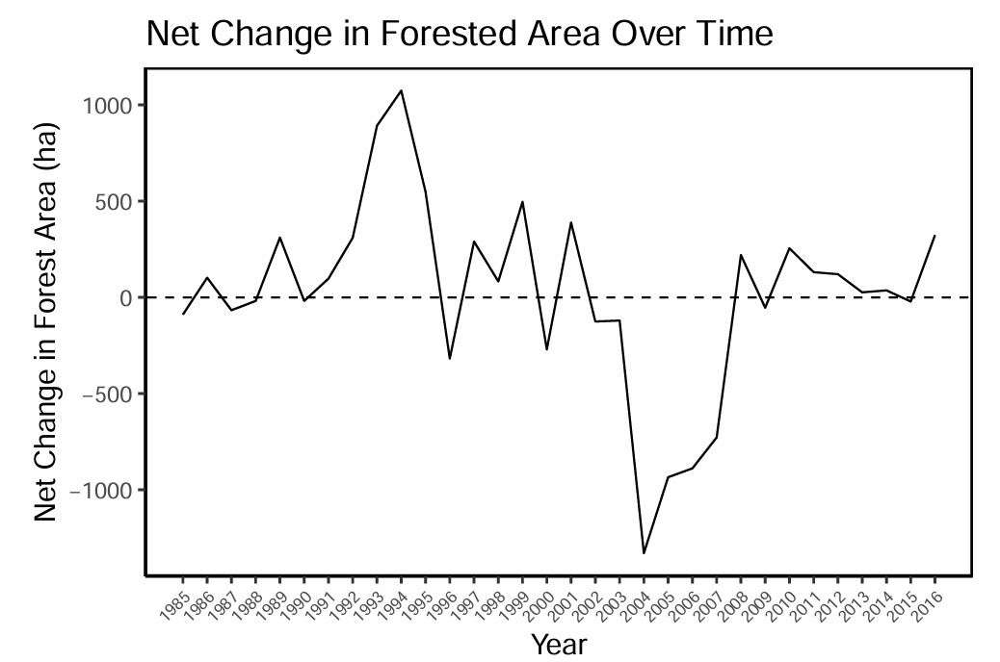
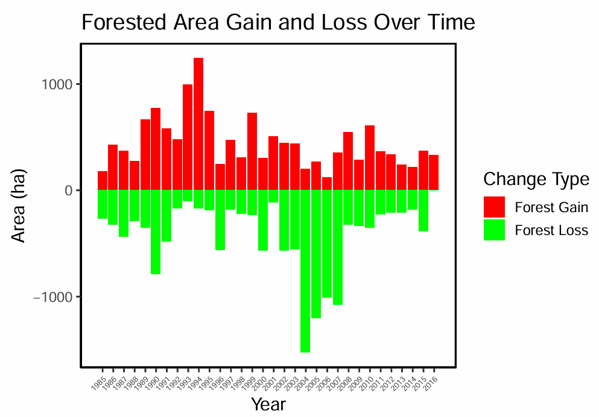

成果图像

BC省 Williams Lake 地区年度森林净变化折线图

森林增益/损失堆叠柱状图（1984–2016年）
项目描述
- 使用 R（terra、bfast、tidyverse）处理 2001–2020 年 MODIS MOD13Q1 NDVI 时序数据，共 460 景影像（16天/250m分辨率）
- 完成批量数据读取、文件名解析提取日期、波段重命名与中值合成栅格计算
- 提取两个兴趣区（ROI）的逐期 NDVI 均值，进行长格式数据整理与月度/年度时序统计分析，识别植被生长季峰值规律
- 应用 BFAST（Breaks For Additive Season and Trend）算法对 NDVI 时间序列进行结构突变检测，识别两处样点分别在 2011 年与 2008 年发生的植被异常下降事件
- 结合 NDVI 变化模式推断扰动成因（野火干扰 vs. 森林采伐/疏伐恢复）
- 处理 33 年（1984–2016）Virtual Land Cover Engine（VLCE）Landsat 土地覆盖分类时序栅格数据
- 基于自定义重分类表将 12 类地表覆盖类型二值化为森林/非森林，使用栅格波段差分逐年计算森林面积增长与损失量（单位：公顷）
- 使用 ggplot2 完成多种时序可视化，量化分析因主动森林经营导致的森林覆盖动态平衡
R · bfast
terra · tidyverse
MODIS MOD13Q1
NDVI 时序分析
BFAST 突变检测
VLCE Landsat
ggplot2
森林变化检测